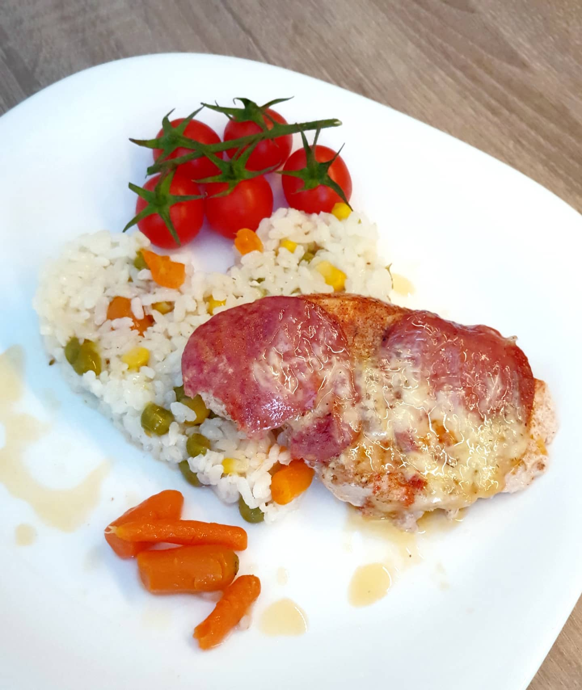

Zeleninové rizoto podľa @juliet_dzuliet — Normy Jedál
🍴Zapekané morčacie prsia 🍽 Láska ide cez žalúdok? 🥗
#todaylunch #sosyrom a #zeleninoverizoto
#smacznego😋 #varimvarisvarime
.
.
.
.
.
#vareniejeradost #varenie #dobrejedlo #nazjedenie❤️ #cookingwithlove #cooking #today #todaymood #cookingtime #kitchentime #kitchencreations #formyfamily❤️ #risotto #risottoheart #turkeymeat #salami #cheese #cherryparadajky #cherrytomatoes